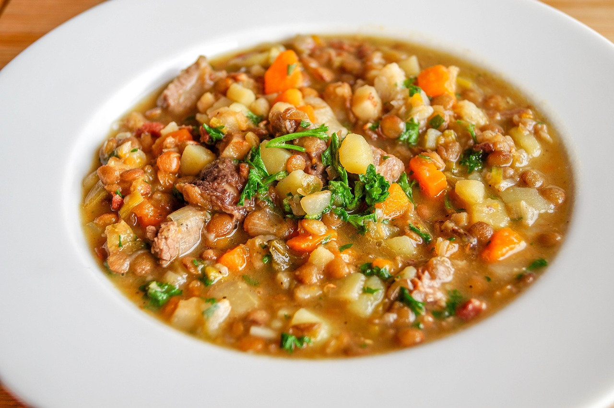

qq
Lentil soup recipe
Lentil soup

Description
A traditional recipe for lentil soup.
Ingredients:
- 1 Onion
- 1 slice of pork belly
- 500g lentils (washed)
- 2 litres of water
- 2 bouillon cubes (with meat)
- 2 potatoes
- 1 bunch of greens
Steps:
- Chop the onion
- Chop the pork belly
- Chop the bunch of greens
- Chop the potators
- Fry onion and pork belly in an open pressure cooker
- Add water, lentils, bouillon cubes, potatoes and greens
- close pressure cooker and let it boil for 15 minutes
Add Maggi and vinegar as you want.
Home